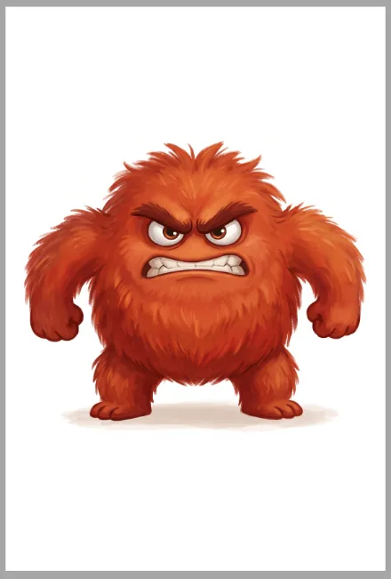

Emoční
příšerky
24 karet emocí pro povídání s dětmi od 4 let. Na jedné straně příšerka, která emoci prožívá, na druhé popis — jak ji dítě pozná, co cítí v těle, kdy ji zažívá a co mu pomůže.
- Papír 250 g, formát A4, kvalita „nejlepší“.
- Zapněte obousměrný tisk — překlopení po delší straně.
- V nastavení tisku vyberte 100 % / bez přizpůsobení.
- Rozřežte podle slabých linek na 4 karty A6.
- Volitelně zakulaťte hrany a zalaminujte.
- 6 archů s příšerkami + 6 archů s popisy
- 24 omalovánek — příšerky jako kontury k vybarvení
- Plakát se všemi 24 emocemi na zeď
- Metodický list pro školky a poradny



Emoční příšerky
Pro školky a poradny
K čemu karty slouží
Karty pomáhají dětem pojmenovat, co se v nich děje. Dítě nejdřív pozná emoci na obličeji a v postoji příšerky, potom si pro ni najde vlastní situaci a nakonec zkusí říct, co by mu pomohlo. Právě tohle třetí je cíl — emoce se nemá „vypnout“, ale zvládnout.
Jak s kartami mluvit
- Ptejte se otevřeně: „Co myslíš, že se jí stalo?“
- Nabídněte tělo: „Kde bys to cítil — v bříšku, v srdíčku?“
- Nehodnoťte. Žádná emoce na kartách není špatná.
- Sdílejte i sebe: „Já to znám, taky mě to někdy…“
- Končete otázkou „Co by pomohlo?“
Zařazení do dne
- Ranní kruh: každé dítě si vybere kartu „takhle jsem dnes přišel“.
- Po konfliktu: obě děti najdou kartu toho, co cítily.
- Před spaním / na odpočinek: karta dne a krátké povídání.
- Individuální práce: hry 3 a 4 na jemné rozdíly mezi pocity.
Věkové rozvržení
- 4 roky: hra 1 (Ukaž mi emoci) a pexeso s poloviční sadou.
- 5 let: hry 2, 3, 6 — situace, dvojice, pantomima.
- 6 let a víc: hry 4 a 7 — jemné rozdíly a příběh z balíčku.
Proč mají karty barevné rodiny
Všech 24 emocí je rozdělených do pěti barevných rodin — vztek, smutek, radost, strach a tělo a překvapení. Emoce ve stejné rodině spolu úzce souvisí a liší se hlavně silou — třeba netrpělivost a vztek jsou obě ze žluto-zelené rodiny vzteku, jen v jiné intenzitě. Díky barvě dítě snadno pozná příbuzné pocity, i když ještě neumí přesná slova, a časem se naučí rozlišovat jemné odstíny v rámci jedné rodiny.
Podobné emoce a opaky
Na každé kartě je řádek Podobné emoce. Dvojice jako vztek × netrpělivost, smutek × osamělost nebo strach × nervozita jsou nejcennější materiál — děti se na nich učí, že pocity mají odstíny. Opaky (radost × smutek, důvěra × strach, nadšení × nuda) pomáhají ukázat, že se pocity mění.
Na co si dát pozor
Když se dítě u nějaké karty opakovaně zasekne nebo o ní odmítá mluvit, není to chyba hry — je to informace. Nenuťte, kartu odložte a vraťte se k ní jindy, případně to zmiňte rodičům.